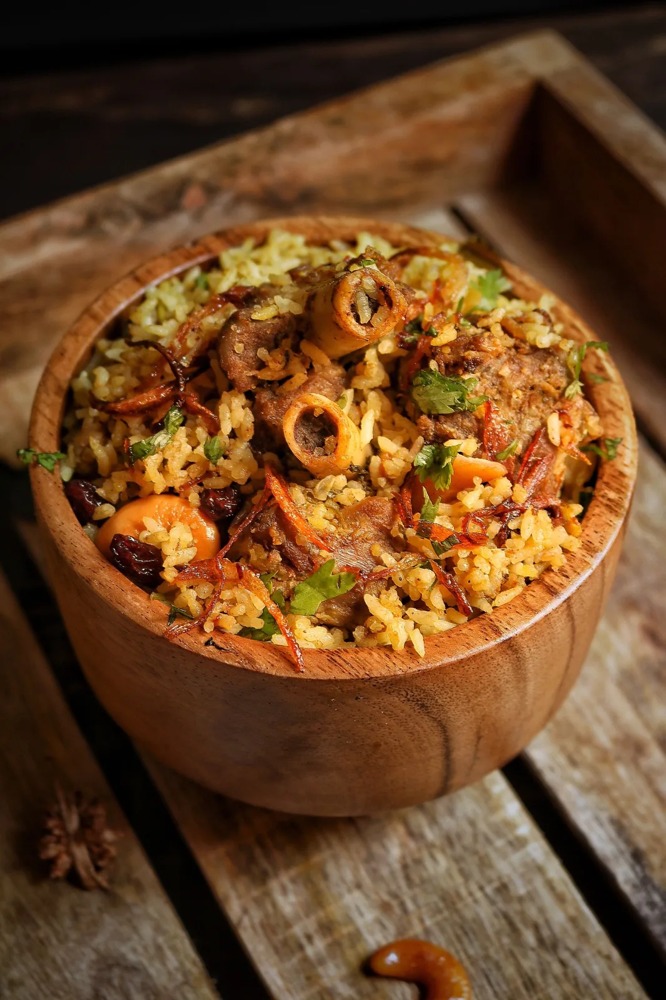

Lucknow plans its weddings backwards. Not the date — the dastarkhwan. The menu sets the mood of every other decision, and in Awadhi tradition it has a rhythm: it opens light, builds to the dum, and closes slowly, with sweet things and paan. Here is how a great Awadhi wedding menu is built — the way we have been building them since 1994.

1. Open with the starters
Two or three depends on the guest count, but every Awadhi menu proudly opens with kebab and tikki — Galouti, seekh, galouti-kebab-on-ul-te-ka-parantha — and a chaat counter with paani batashe, dahi batashe and tikki. In a city that argues about its chaat, this first counter is where guests decide how good the evening will be.
2. Build to the degh
The heart of the meal is the main course, and the heart of the main course is slow-cooked dum. Think biryani sealed in a degh on coals, korma, roganjosh, qormas and seasonal vegetarian dums — paneer and vegetables cooked patiently, not flattened by pressure. Awadhi cooking uses minimal spice, so every ingredient has to be chosen before it is measured.
3. Add live counters that fit the guest list
Modern Lucknow weddings expect the new food along with the old: a veg kebab-parantha counter, a steaming dumpling stand, maybe a Korean ramen station for the young guests and a chocolate fountain for closing. The trick is balance — trendier stations for younger crowds, and more deghs where the relatives hold court.
4. Close the way the city does
A Lucknowi meal ends with kulfi, phirni or a mishthan counter, and a khad (paan) walk. This last course is small but remembered — spend the extra thought here, not just the money.
Planning yours
Share your guest count and venue and we will build a menu course by course — the same standard for wedding catering in Lucknow, whether the feast is for sixty or six hundred. Tell us your date and we will be candid about what fits your occasion.